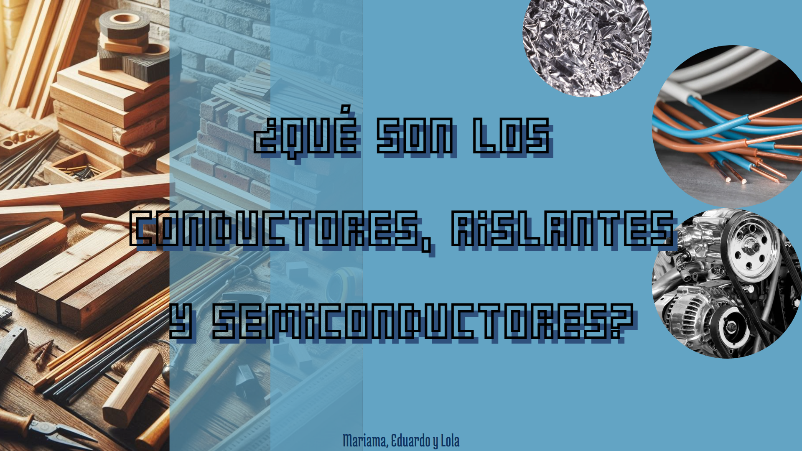

Tambien en física y química hemos estado investigando sobre los materiales que llevan las propiedades de conducción elctrica necesarias para construir tecnologías solares. investigamos en internet e hicimos una presentación en "Canva" respondiendo a las preguntas planteadas por la maestra (enlace a la presentación en logo de la derecha).
